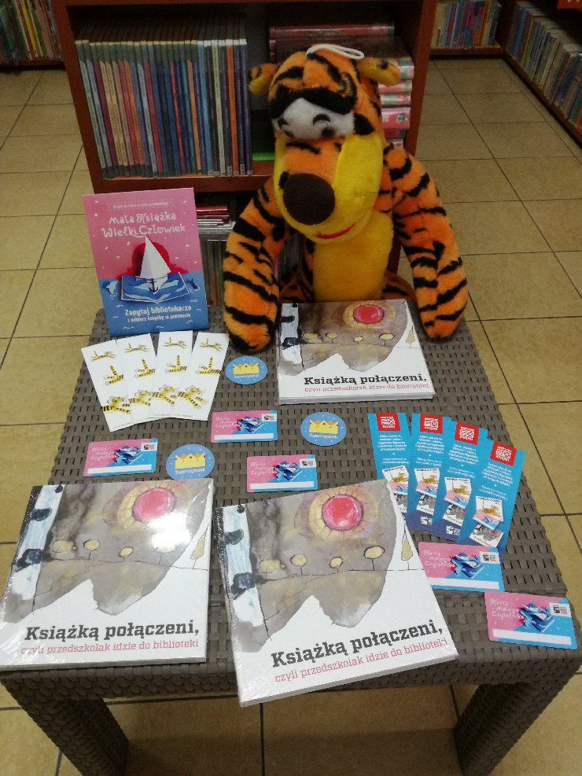
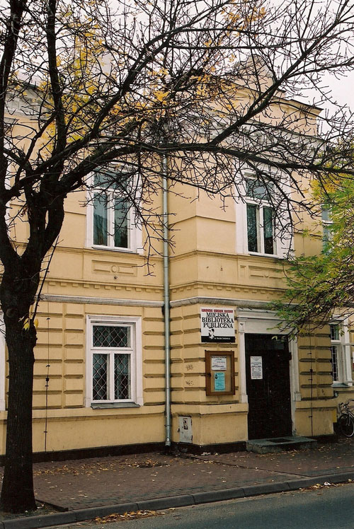

Biblioteka
Miejska Biblioteka Publiczna działa na podstawie ustawy o bibliotekach, statutu nadanego przez Organizatora, którym jest Miasto Łuków oraz porozumienia zawartego pomiędzy Miastem Łuków i Zarządem Powiatu w sprawie powierzenia realizacji zadań powiatowych.
Wyprawka Czytelnicza dla przedszkolaka
Z ogromną przyjemnością informujemy, że w naszej bibliotece ruszyła kolejna edycja kampanii „Mała książka – wielki człowiek”. Akcja skierowana jest do dzieci urodzonych w latach 2014-2017.

Każdy przedszkolak, który zapisze się do biblioteki, otrzyma WYPRAWKĘ NA DOBRY CZYTELNICZY START. W wyprawce tej dzieci znajdą ciekawą książeczkę „Pierwsze czytanki dla…” , dostosowaną pod względem formy i treści do potrzeb przedszkolaka oraz Kartę Małego Czytelnika.
Za każdą wizytę w bibliotece, zakończoną wypożyczeniem minimum jednej książki z księgozbioru dziecięcego, Mały Czytelnik otrzyma naklejkę, a po zebraniu dziesięciu zostanie uhonorowany imiennym dyplomem potwierdzającym jego czytelnicze zainteresowania. Oprócz dyplomu przedszkolak otrzyma drobny czytelniczy upominek.
W Wyprawce znajdą coś dla siebie także rodzice – przygotowana dla nich broszura informacyjna przypomni o nieocenionej roli czytania w rozwoju ich dziecka oraz o rozmaitych korzyściach wynikających z częstego odwiedzania biblioteki.
Udział w projekcie jest bezpłatny. Wyprawki dostępne są w Oddziale dla Dzieci oraz we wszystkich filiach Miejskiej Biblioteki Publicznej w Łukowie.
Kampania jest realizowana przez Instytut Książki ze środków Ministerstwa Kultury i Dziedzictwa Narodowego.
O nas
Jesteśmy placówką z przeszło stuletnią tradycją. Nasze początki sięgają 1908 roku. Zaliczamy się do grona najstarszych bibliotek w kraju i województwie lubelskim (w województwie starsza jedynie o rok jest biblioteka im. Hieronima Łopacińskiego w Lublinie). Tutaj poznasz naszą historię i dowiesz się o obecnej działalności. Liczymy, że będziesz naszym stałym Gościem. Zapraszamy!
Zbiory naszych bibliotek liczą 92 733 woluminów. Gromadzimy literaturę piękną polską i obcą dla dorosłych, literaturę dla dzieci i młodzieży, popularnonaukową oraz audiobooki. Każdy zainteresowany znajdzie w naszych bibliotekach „coś” do poczytania. Posiadamy duży wybór literatury relaksacyjnej, powieści obyczajowych, psychologicznych, historycznych, sensacyjnych, fantastycznych, pięknie ilustrowanych książek dla najmłodszych. Zbiory biblioteczne wypożyczane są na zewnątrz. W czytelniach, na miejscu udostępniane są wydawnictwa informacyjne, zbiory regionalne, czasopisma bieżące (40 tytułów), wycinki prasowe. Czasopisma archiwalne wypożyczamy do domu. Oferujemy bezpłatny dostęp do Internetu.
Biblioteka jest w pełni skomputeryzowana. Pracujemy w Systemie MAK+. Dużym udogodnieniem dla czytelników jest katalog biblioteczny on-line dostępny na naszej stronie internetowej, karta czytelnika usprawniająca proces wypożyczania oraz dostęp do konta bibliotecznego i rezerwacji książek przez Internet.
Oprócz podstawowej działalności: gromadzenia, opracowania i udostępniania zbiorów, prowadzimy szeroką działalność edukacyjną i upowszechnieniową w zakresie książki i czytelnictwa adresowaną do mieszkańców miasta i powiatu łukowskiego. Organizujemy imprezy czytelnicze, konkursy, wystawy, lekcje biblioteczne, spotkania autorskie. W bibliotece działa Dyskusyjny Klub Książki dla dorosłych, spotkania odbywają się raz w miesiącu. W Czytelni dla Dzieci istnieje kącik gier planszowych.
Uczestniczymy w różnych programach, konkursach i projektach, dzięki którym pozyskujemy granty na zakup księgozbioru i działalność edukacyjną. Corocznie jesteśmy beneficjentami programu Biblioteki Narodowej – Zakup nowości wydawniczych dla bibliotek.